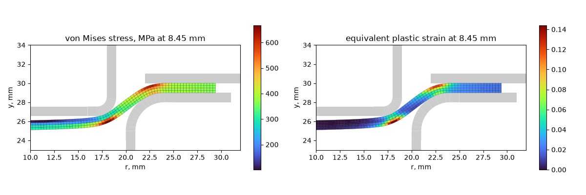
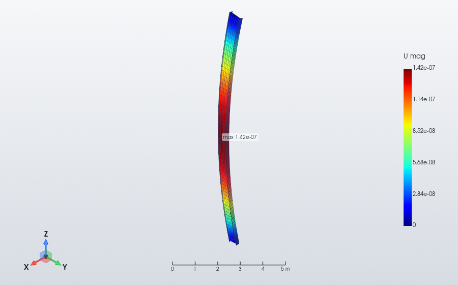
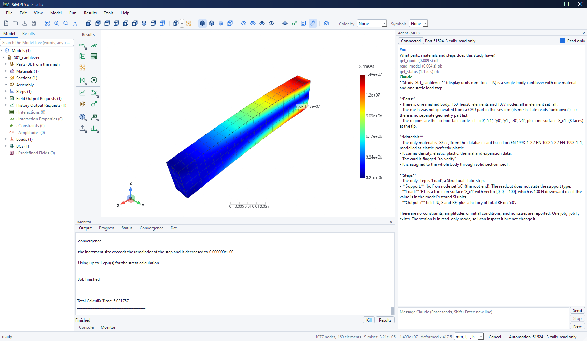

Import STEP, IGES or BREP, or sketch in the viewport.
02
Mesh
Gmsh tets, structured blocks, shells, local sizes, quality metrics.
03
Set up
Materials, sections, steps, supports, loads and contact.
04
Solve
CalculiX, the built-in femkit, SfePy, or a live PrePoMax session.
05
Review
Contours, extremes, region statistics, screenshots, a written report.
Every click is a command
Each change is recorded with undo and redo. The journal is a Python script that rebuilds the study, so a result can always be re-run.
# the studio
python -m sim2pro
# open a worked example
python -m sim2pro --example cantilever
# benchmarks against theory
python -m sim2pro.verification
An AI agent can drive it
SiM2Pro serves the Model Context Protocol. Claude Code connects as a client, builds and runs the study through typed tools, and you watch every change land in the tree.
Local address only, token protected
Read-only mode for review
Every agent action can be undone
Beyond linear statics
Modal and buckling, plasticity, contact, explicit forming with rigid tools, coupled temperature-displacement, topology optimisation.


Ask the study. Watch it answer.
The Agent panel connects Claude Code to the open study over MCP. Ask in plain words: each tool call it makes is listed with its time, and Read only lets it inspect the study without changing it.

A real capture of the studio: one real turn with Claude Code on a built-in example, asked "What parts, materials and steps does this study have?"
Your mesh in. A runnable case out.
SiM2Pro prepares the case and reads it back. OpenFOAM does the solving.
Writes a steady incompressible case from a Gmsh mesh: inlet, outlet, walls
Targets foamRun (openfoam.org) and simpleFoam (openfoam.com)
Reads and writes FoamFile dictionaries: sub-dictionaries, lists, dimensions, regex keys
Tested on OpenFOAM's own pitzDailySteady dictionaries
It is a case interface, not a CFD solver. We say so because it matters when you plan a project.
case/
├─ 0/start fields
│ ├─ U
│ └─ p
├─ constant/mesh, properties
│ ├─ polyMesh/
│ └─ physicalProperties
└─ system/how it runs
├─ controlDict
├─ fvSchemes
└─ fvSolution